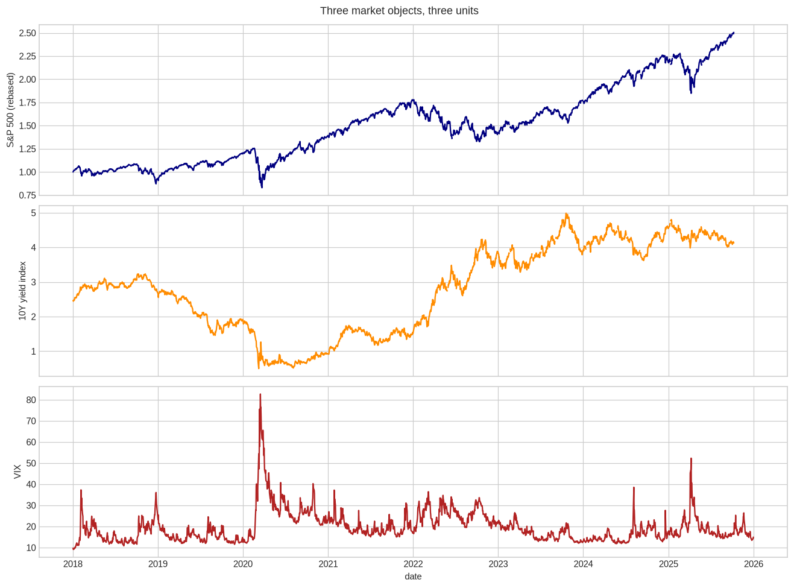
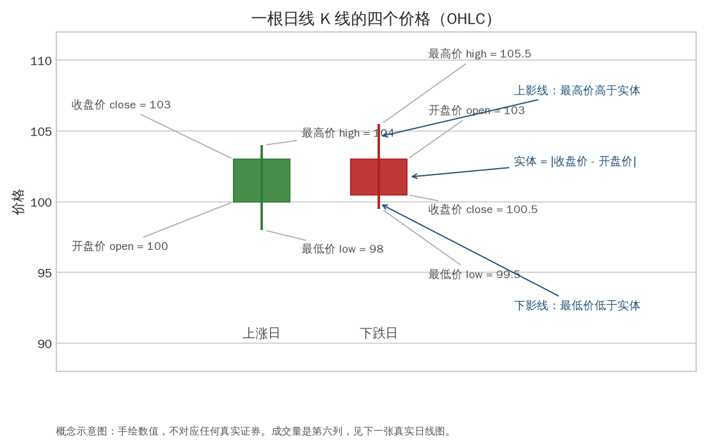
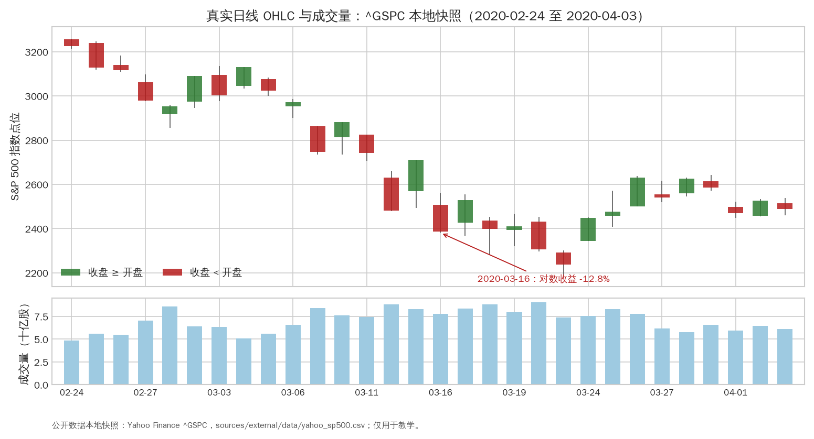
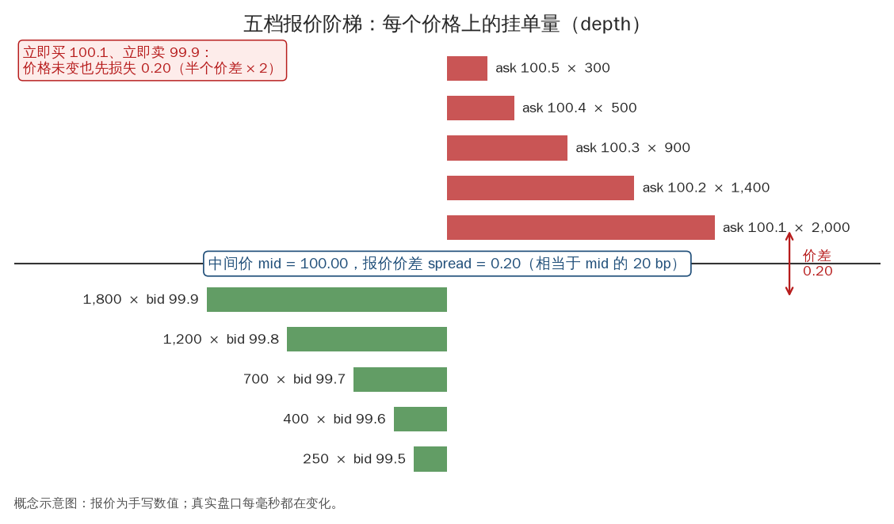
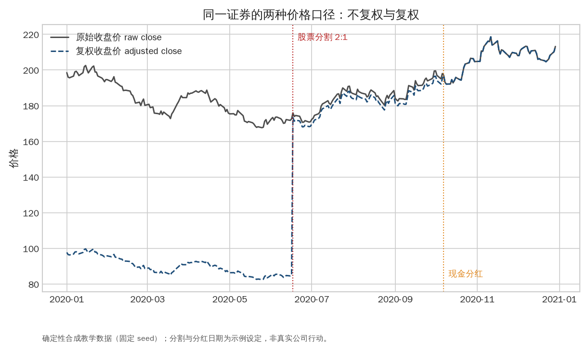
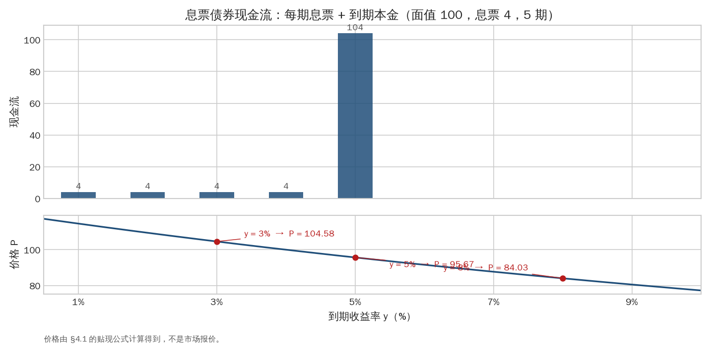
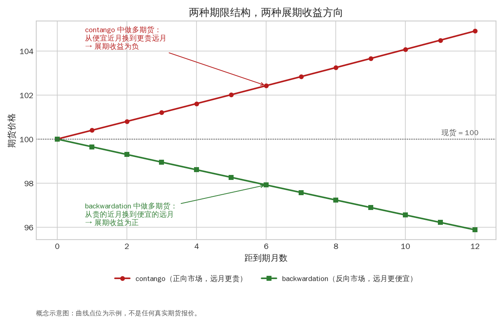
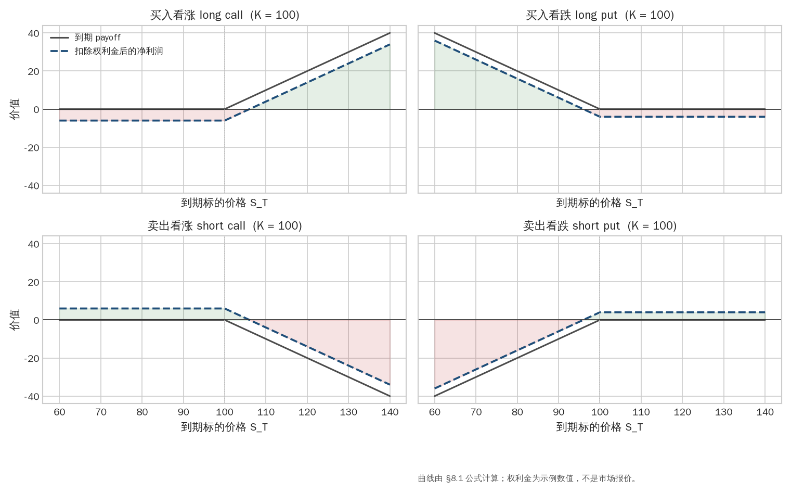

第一章：市场、资产与交易对象（Markets, Assets and Contracts）¶
本章是整套课程的地基。你不需要在第一次阅读时记住每一个定义，但必须在进入回测之前，知道代码里的每一列数据究竟代表什么权利、什么现金流、什么时间点以及什么交易约束。
0. 学习目标与阅读方法¶
完成本章后，你应当能够：
- 用“标的（underlying）、数量/名义本金（quantity/notional）、价格（price）、时间（timestamp）、规则（contract rules）”五个问题描述任何交易对象；
- 解释股票、债券、外汇、商品期货、ETF、期权和加密资产的收益来源；
- 区分交易价格、结算价格、估值价格和可成交价格；
- 读懂 OHLCV、bid/ask、mid、spread、open interest、volume 等常见字段；
- 把资产的经济含义翻译成量化研究中的数据表和目标变量；
- 在项目中说明一个字段何时可见、何时可交易、使用它是否产生 look-ahead bias（前视偏差）。
阅读时建议在纸上画出三个对象：一条股票持仓的现金流、一张债券的现金流时间线、一个期权到期收益曲线。量化研究的很多“高级”问题，最后都可以还原到这三张图。
1. 市场是一个有规则的交换系统¶
1.1 一笔交易的五个基本元素¶
金融市场把不同时间、不同风险偏好的参与者放到同一套规则下。买方交出现金，换取未来现金流、价格变动的可能性或风险转移；卖方得到现金，换取未来交付资产或承担价格风险。
描述一笔交易时，至少要写清楚：
- 标的（underlying）：股票、债券、美元、铜、利率、波动率指数，或某个合成指数。
- 数量和名义本金（quantity / notional）：持有多少股、多少张合约、多少美元面值。期货和掉期中，名义本金可能远大于实际缴纳的保证金。
- 价格（price）：每股价格、债券面值百分比、汇率、期货点位或期权权利金。价格单位必须写出来。
- 时间（timestamp）：报价产生、订单发送、成交、结算、现金流支付和数据发布的时间。它们不一定相同。
- 合同规则（contract rules）：交易时段、交割方式、到期日、最小变动单位、保证金、涨跌停、公司行动和费用。
例如，“买入一份原油期货”还不够完整。应继续问：哪一个月份、每张合约代表多少桶、以什么价格结算、何时最后交易、是否在到期前展期、保证金和手续费是多少。少写一个条件，回测就可能把不同的经济对象混在一起。

图 1-1｜三种市场对象，三种单位。 同一张图里的三条曲线单位完全不同：S&P 500 是价格指数点位，^TNX 是 10 年期美债收益率报价，VIX 是期权隐含波动率指标。把它们画在一起是为了提醒：收益率上升不等于债券价格上涨，VIX 也不是可以按“现货价”直接长期持有的资产。读图时把每一列补成数据字典：来源、单位、时间戳、何时可见、是否可交易。数据类型：公开数据本地快照（Yahoo Finance ^GSPC/^TNX 与公开 VIX 日线），由本章 notebook 的实验单元生成。
1.2 价格不是一个永恒的“真实价值”¶
价格是某一时刻，在给定规则和流动性下，愿意买和愿意卖的人能够达成的交换条件。它同时包含：
- 预期（expectations）：参与者对未来利润、利率、库存、供需和政策的判断；
- 风险补偿（risk premium）：愿意承担不确定性的人要求的回报；
- 资金和融资条件（funding conditions）：利率、保证金和借券是否容易；
- 订单流（order flow）：当前买卖订单的方向、数量和紧迫程度；
- 流动性（liquidity）：需要交易时，价格能否以较小冲击成交。
所以，价格上涨可以表示信息改善，也可以表示空头回补、流动性暂时变差或风险溢价下降。量化研究不是把“上涨”自动解释成“基本面变好”，而是先提出可以被数据区分的假设。
2. 报价、成交和行情字段¶
2.1 OHLCV 的含义¶
日线数据常见的五列是：
- Open（开盘价）：交易日内第一笔有效成交或规定的开盘集合竞价价格；
- High（最高价）：该时间区间观察到的最高成交价；
- Low（最低价）：该时间区间观察到的最低成交价；
- Close（收盘价）：规定收盘时的成交价、收盘集合竞价价或数据商定义的最后价；
- Volume（成交量）：成交的股数、合约数或币数，单位因资产而异。
close 不是普适的“当天可以成交的价格”。有些市场在收盘集合竞价后才公布收盘价，有些数据商把复权因子应用到历史价格，有些期货数据用结算价代替最后成交价。使用前要阅读字段定义。

图 1-2｜K 线解剖。 一根日线把当天交易压缩成四个价格：实体高度是 |收盘 − 开盘|，上下影线是成交过但没收住的价格区间。上涨日与下跌日只是收盘相对开盘的方向，不代表当天“一直涨”或“一直跌”。读图时问自己：如果回测只用 close，它丢掉了 high/low 里的哪些信息？数据类型：概念示意图（手绘数值，不对应任何真实证券）。

图 1-3｜真实日线长什么样。 这是真实 ^GSPC 本地快照在 2020 年 2–4 月的日线：实体和影线的含义与上一张概念图相同，但数值来自公开数据。注意 2020-03-16 单日对数收益约 -12.8%，同时成交量放大；“高成交量”并不等于“容易交易”，那几天的买卖价差和冲击也同时变大。数据类型：公开数据本地快照（Yahoo Finance ^GSPC，2020-02-24 至 2020-04-03）；仅用于教学，不构成投资建议。
2.2 Bid、ask、mid 和 spread¶
- Bid（买一价）：市场当前愿意买入的最高报价；
- Ask/offer（卖一价）：市场当前愿意卖出的最低报价；
- Mid（中间价）：
- Quoted spread（报价价差）：
- Relative spread（相对价差）：常用 \(s_t/m_t\)。
假设买一价 99.9、卖一价 100.1，中间价是 100，报价价差是 0.2。立刻买入后立刻卖出，即使价格没有变，也大约先损失半个 spread 买入再损失半个 spread 卖出。真实成交还会有 queue position（排队位置）、market impact（市场冲击）和 latency（延迟）。

图 1-4｜报价阶梯与半个价差的成本。 图把 bid/ask 画成两侧的深度条：最好的买价 99.9、最好的卖价 100.1，中间价 100.00，报价价差 0.20。如果你立即买入再立即卖出，价格没变也会损失 0.20，这就是短周期策略最先遇到的成本。数据类型：概念示意图（手写报价；真实盘口每毫秒都在变化）。
2.3 Volume 与 open interest¶
Volume 是一段时间内成交了多少；open interest（未平仓量） 是期货或期权仍然存在的未平仓合约数量。成交量可以很大但未平仓量不变（合约在交易者之间转手），也可以因为新合约建立而增加。不能把二者当成同一个“市场热度”指标。
3. 股票（Equity）：企业剩余权益¶
3.1 股票现金流和估值直觉¶
普通股（common stock）代表对公司的剩余权益（residual claim）：公司先支付员工、供应商、利息和税费，剩余的现金流和清算价值才归股东。股东的回报通常来自：
- 股息（dividend）；
- 公司回购导致的每股权益变化；
- 市场重新评价未来现金流带来的价格变化。
概念上，股价可以写成未来股东现金流的折现值：
其中 \(CF_t\) 是未来现金流，\(E[\cdot]\) 表示在信息集下的预期，\(k\) 是与风险相匹配的折现率。这个式子不是让你精确预测几十年现金流，而是提醒你：价格同时受现金流预期和折现率影响。利率上升可能压低估值，即使公司短期利润没有变化。
3.2 公司行动（corporate actions）¶
研究股票时必须处理：
- 现金股息（cash dividend）：持有者得到现金，除息日价格通常相应下降；
- 股票分割（stock split）：股数和每股价格按比例改变，总市值理论上不变；
- 配股/增发（rights issue / issuance）：股本和融资变化；
- 并购、退市、换股（merger / delisting / exchange）：历史价格序列可能中断；
- 复权价格（adjusted price）：数据商把部分公司行动折算回历史价格。
若用未复权收盘价计算长期持有收益，股息和分割会被误判为巨大亏损或收益；若用已经调整后的价格，又不能把它直接当作当时可成交的 raw close。项目中要明确 raw_close、adjusted_close 和现金股息是否分别使用。

图 1-5｜raw close 与 adjusted close 的分叉。 合成价格序列在两个公司行动日（2:1 拆股、现金分红）之后，原始收盘价与复权收盘价出现台阶式分叉。用 raw close 算长期收益会把拆股误判为 -50% 的亏损；用 adjusted close 又不能把它当作当时可成交的价格。数据类型：确定性合成教学数据（固定 seed；公司行动日期为示例设定）。
3.3 财务数据的时间问题¶
一份财报有至少三种时间：
- period end（报告期末）：财报描述的经营期间结束日；
- filing/release time（披露时间）：投资者真正能看到它的时间；
- effective time（生效时间）：某项事件对市场可交易的时间。
用“报告期末的利润”预测报告期末之前的收益，就是典型的 look-ahead bias。正确做法是用披露时间对齐，并设置足够的可交易延迟。
4. 债券与利率（Bonds and Rates）¶
4.1 债券的现金流¶
普通固定息票债券（coupon bond）在每个付息日支付息票，到期支付本金。面值为 \(F\)，每期息票为 \(C\)，剩余 \(T\) 期，市场每期要求收益率为 \(y\)，则价格为：
- \(P\)：今天买入债券付出的价格；
- \(C\)：合同规定的每期现金流；
- \(F\)：到期返还的本金；
- \(y\)：市场要求的回报率；
- \(T\)：剩余期数。
例：面值 100、每年票息 5、两年到期，若要求收益率为 5%，价格约为 100；若要求收益率升到 6%，同一组现金流的折现值会低于 100。债券价格与收益率通常反向变化，因为未来现金流被更重地折现。

图 1-6｜债券现金流与价格—收益率反向关系。 上半部分是面值 100、息票 4、5 期债券的合同现金流：每期 4，最后一期加回本金。下半部分把同一组现金流按不同到期收益率折现：y = 3% 时价格 104.58，y = 5% 时 95.67，y = 8% 时 84.03。现金流不变、价格变化，这就是利率风险的来源。数据类型：概念示意图（价格由 §4.1 公式计算，非市场报价）。
4.2 Yield、duration、convexity 和信用利差¶
- Yield to maturity（到期收益率）：使未来合同现金流的折现值等于当前价格的内部收益率。它假设现金流按该收益率再投资，现实中未必成立。
- Macaulay duration（麦考利久期）：按现金流现值加权的平均收款时间。
- Modified duration（修正久期）：价格对收益率小变化的近似敏感度：
若修正久期为 7、收益率上升 0.01（100 个基点），价格约下降 7%。 - Convexity（凸性）：收益率变化较大时，对线性久期近似的二阶修正。 - Credit spread（信用利差）：相似期限信用债相对基准无风险或国债收益率的额外收益率，补偿违约、流动性和风险偏好。
研究利率策略时，必须区分 level（整体水平）、slope（曲线斜率）和 curvature（曲率）变化；只看一只债券的价格很难知道是哪一种风险在起作用。
5. 外汇（Foreign Exchange, FX）¶
5.1 报价方向¶
EUR/USD = 1.0800 表示 1 欧元兑换 1.08 美元。若 EUR/USD 从 1.08 上升到 1.10，欧元相对美元升值；但 USD/JPY 上升则表示 1 美元能换更多日元，方向不能凭“数字上升”统一判断。
外汇交易有：
- spot（即期）：按市场规则在短期内交割；
- forward（远期）：今天约定未来日期的汇率；
- swap（掉期）：同时进行近端和远端的反向交易，常用于融资和展期。
远期价格受利率平价、融资和信用条件影响。概念上，若美元利率高于欧元利率，远期汇率与即期的关系会反映这部分利差；远期点数不应直接当成对未来现货方向的纯预测。
5.2 外汇研究中的工程陷阱¶
需要明确时区、报价方、假日、滚动时间、点值（pip value）和交易成本。一个策略在纽约收盘数据上计算信号，却在东京开盘成交，可能把不可实现的价格差当成 alpha。多货币组合还要决定报告币种（reporting currency）和汇率换算时点。
6. 商品、期货与连续合约（Commodities and Futures）¶
6.1 期货合约是什么¶
期货是标准化的远期合约。交易者支付保证金（margin），每天按盯市规则结算盈亏；合约通常规定标的、数量、最小价格跳动、到期日、交割地点或现金结算方式。保证金不是期货的全部经济价值，因此不能把保证金占用误认为名义风险。
期货总回报常拆成：
- spot return（现货收益）：商品理论现货价格变化；
- collateral return（抵押品收益）：保证金现金或短债的利息；
- roll yield（展期收益）：从近月换到下一合约时的价格差。
6.2 Contango 与 backwardation 的例子¶
假设当前近月合约价格 100，下一月合约 102。到期临近时，近月价格收敛到现货 100，但如果你卖出到期近月、买入下一月，可能以 102 重新建立仓位，产生 -2 的展期损耗。这种曲线向上称为 contango（升水/正向市场）。若下一月只有 98，展期可能产生正收益，称为 backwardation（贴水/逆向市场）。
“现货上涨”并不自动意味着期货投资者赚钱，因为持仓期间还要不断展期。连续合约（continuous contract）是研究用的拼接序列，不是一个可以永远持有的真实合约；拼接规则（前复权、后复权、比例调整或固定主力）会改变收益统计。

图 1-7｜期限结构决定展期收益的符号。 两条曲线从同一现货价 100 出发：contango 下远月更贵，做多期货每次展期都“买贵”，展期收益为负；backwardation 下远月更便宜，做多展期“买便宜”，展期收益为正。因此“看对现货方向”和“期货头寸赚钱”是两件事。数据类型：概念示意图（曲线点位为示例）。
7. ETF、指数和基金份额¶
Index（指数） 是规则定义的组合或统计量，可能是价格指数（price index）或总回报指数（total return index）。总回报指数把股息再投资；价格指数不包含股息。二者混用会系统性夸大或低估长期收益。
ETF（exchange-traded fund） 是在交易所交易的基金份额。ETF 的市场价格、基金净值（NAV）、申赎机制、管理费和跟踪误差（tracking error）共同决定投资者体验。一个“跟踪黄金”的 ETF 可能持有现货、期货或矿业股票，风险来源完全不同。
8. 期权（Options）：带条件的权利¶
8.1 到期收益¶
看涨期权（call）给持有人按执行价 \(K\) 买入标的的权利；看跌期权（put）给持有人按 \(K\) 卖出的权利。到期时的 payoff（收益，不含权利金）是：
期权买方的净利润还要减去买入的 premium（权利金）；期权卖方收益上限通常是权利金，但可能承担很大的尾部损失。用 \(S_T=80,K=100\) 试算：call payoff 为 0，put payoff 为 20；若 put 权利金是 4，买方净利润为 16。

图 1-8｜期权到期 payoff 与净利润。 四个面板分别是买入/卖出看涨、买入/卖出看跌：灰色实线是到期 payoff，蓝色虚线是扣除权利金后的净利润，绿色与红色阴影标出盈亏区域。买方损失有限、卖方尾部风险大，这张图把 §8.1 的公式变成了形状。数据类型：概念示意图（K = 100，call 权利金 6、put 权利金 4 为示例数值）。
8.2 Greeks 的直观解释¶
- Delta：标的价格小变动时，期权价格约变多少；
- Gamma：delta 如何随标的价格变化；gamma 大意味着非线性更强；
- Vega：隐含波动率（implied volatility）上升一个单位时，期权价格的近似变化；
- Theta：其他条件不变，时间流逝带来的价值变化；
- Rho：利率变化对期权价格的敏感度。
期权研究要同时考虑方向、波动率、期限、执行价、跳跃和对冲频率。用“预测涨跌”的股票模型直接交易期权，通常漏掉了 volatility surface（波动率曲面）和 gamma 风险。
9. 加密资产与另类数据¶
加密资产常在多个交易所 24/7 交易，没有统一的收盘时刻。需要定义交易所、时区、稳定币计价、资金费率（funding rate）、借贷和托管风险。跨交易所价差还要考虑转账延迟、限额和无法提币等操作约束。
另类数据（alternative data）包括文本、网页、卫星图像、支付、供应链、应用使用量和招聘信息。研究重点不是“数据越新越好”，而是：
- 当时是否真的能获得（availability）？
- 覆盖对象是否长期一致（coverage）？
- 是否存在修订、删除或回填（revision/backfill）？
- 使用是否有授权和合规边界？
- 交易成本和容量能否支持把信号转成仓位？
10. 无套利、保证金与现金流时间线¶
10.1 无套利（No-arbitrage）是定价的基线¶
无套利不是“市场永远没有赚钱机会”，而是一个可检验的基线：如果两个交易组合在未来所有状态下现金流完全相同，它们今天的价格不能长期不同，否则可以买便宜的一边、卖贵的一边并锁定差额。量化研究常把一个资产的收益分成：
- 持有现金流（carry）：利息、股息、租金、便利收益；
- 价格变化（price change）：市场对未来现金流和风险的重新定价；
- 融资、保证金和交易摩擦：资金占用、借券、手续费、bid–ask spread；
- 合约滚动或转换（roll/contract mechanics）：期货换月、ETF 跟踪误差、期权到期。
例如，远期/期货的简单现金和持有成本关系可写成 F ≈ S·exp((r+u-y)T)：S 是现货，r 是融资利率，u 是储存/持有成本，y 是便利收益。真实市场还有基差、保证金和供求，所以这是检查数量级的关系，而不是无条件预测公式。看到期货价格上涨时，先问上涨来自现货、利率、展期结构还是风险溢价。
10.2 保证金与 mark-to-market¶
期货不是支付全部名义本金后持有现货。交易者缴纳初始保证金（initial margin），每日按结算价进行盯市（mark-to-market），亏损会减少保证金并触发追加保证金（variation margin）。因此：
- 名义敞口（notional exposure）可以远大于现金保证金；
- 日收益的复利基准是账户净值，不是合约价格；
- 极端波动时，理论上长期有利的仓位也可能因流动性和追加保证金被迫平仓。
期权买方支付权利金，最大损失通常是权利金；期权卖方收到权利金却承担非线性尾部风险和保证金占用。面试时不要只谈 payoff 图，要同时说明 collateral、margin 和可交易流动性。
10.3 现金流时间线练习¶
对任何衍生品或跨资产信号画三行时间线：information available → order sent → cash/settlement。例如公司公告 10:05 发布、数据服务 10:07 收到、模型 10:08 完成、策略 10:10 才能下单，那么 10:00 收盘价不是可用成交价；回测应从 10:10 后的报价或下一根 bar 开始。把这一时间线写进数据字典，能同时检查 look-ahead、融资和结算错误。
11. 参与者、岗位与价格形成¶
- Quantitative researcher（量化研究员，QR）：提出经济或统计假设，设计特征与标签，验证稳定性，写研究报告。
- Quantitative trader（量化交易员，QT）：把信号放进实时决策，关注仓位、执行、库存、PnL attribution 和异常状态。
- Quantitative developer（量化开发，QD）：建设数据、回测、执行和监控系统，保证延迟、正确性和可复现性。
- Market maker（做市商）：同时给出 bid/ask，承担库存和 adverse selection（逆向选择）风险。
- Asset manager（资产管理者）：按照投资目标管理组合、风险预算和客户约束。
做市商不只是“低买高卖”。如果买方更可能掌握坏消息，做市商收到买单后可能面临 adverse selection；报价会扩大，库存会影响下一次报价。量化研究因此要问：信号能否在真实订单和限制下执行，而不只是预测一个干净的收盘价。
12. 读数据表时的五问清单¶
对任何新数据集，先写一页 data dictionary（数据字典）：
- 一行代表什么对象和时间区间？
- 数值的单位、币种和价格类型是什么？
- 这列何时对研究者可见，何时能下单？
- 是否做过复权、插值、去极值或缺失填充？
- 如果今天要交易，历史回测能否以同样方式得到这列？
只要五问中有一问答不出来，就先不要把该字段放进模型。
13. 常见误解与纠正¶
- “股票价格就是公司价值。” 价格是市场在当时流动性和预期下的交换条件，价值模型只是解释工具。
- “债券收益率上升，债券投资者一定亏损。” 现有债券价格通常下跌，但持有到期的现金流、再投资和信用事件仍需分别分析。
- “期货价格就是未来现货价格预测。” 期货还包含融资、库存、风险溢价和展期结构。
- “高成交量意味着容易交易。” 压力时期可能高量但冲击很大；要看 spread、depth 和 price impact。
- “有很多历史数据就没有前视偏差。” 回填、修订和退市消失都能让历史样本看起来比当时真实环境更好。
- “连续合约是一只真正的长期合约。” 它是研究者选择拼接规则得到的序列，必须记录拼接方法。
14. 手工练习：从经济对象到数据列¶
选择一个股票 ETF、一个长期国债 ETF、一个黄金期货连续合约和一个看涨期权，完成下表：
| 对象 | 主要收益来源 | 价格/结算字段 | 需要的时间戳 | 最容易漏掉的成本或风险 |
|---|---|---|---|---|
| 股票 ETF | 股价、股息、跟踪误差 | 复权价、NAV、bid/ask | 交易、分红、披露 | spread、管理费、股息处理 |
| 长期国债 ETF | 利息、久期变化、信用/流动性 | NAV、成交价、收益率 | 收盘、利率曲线 | 久期、利率跳变 |
| 黄金期货 | 现货、抵押品、展期 | 主力/近月、结算价 | 交易日、到期、换月 | contango、保证金 |
| 看涨期权 | 方向、波动率、时间价值 | premium、IV、Greeks | quote、trade、expiry | gamma、流动性、权利金 |
写完后再回答：如果信号在 16:05 产生，而资产在 16:00 收盘，你会用哪一个价格成交？如果答案是“收盘价”，请说明为什么该价格在信号产生之前就已经可知。
15. 本章小结¶
资产不是同一种“价格序列”。股票是企业剩余权益，债券是合同现金流，外汇是相对货币价格，期货是带保证金和到期规则的合约，期权是非线性权利，ETF 是交易所基金份额。每个对象的收益分解、时间戳、成本和风险都不同。
量化研究的第一步是定义对象，而不是选择模型。把经济含义写成数据字典，再把数据字典写成可测试的交易规则，后续的收益、回测和机器学习才有意义。
16. 自测与面试表达¶
- 为什么 EUR/USD 上涨和 USD/JPY 上涨不能用同一句“美元上涨”解释？
- 若期货曲线处于 contango，为什么现货上涨时长期期货 ETF 仍可能亏损？
- 财报报告期末是 3 月 31 日，4 月 20 日才发布。最早哪一天的交易信号可以使用它？
- 用 30 秒向面试官解释 bid、ask、mid 和 spread，并说明为什么 backtest 只用 close 会高估短周期策略。
- 用 60 秒比较股票、债券和期权的一个共同点与两个不同点。
Reference 与进阶了解¶
以下资料免费或可公开获取，适合本章后按需查阅：
- Jane Street, Puzzles、公司业务概览和官方 Blog（旧 teaching URL 已失效）：https://www.janestreet.com/puzzles/、https://www.janestreet.com/what-we-do/、https://blog.janestreet.com/。
- U.S. Securities and Exchange Commission, Investor.gov 的 Stocks、Bonds、ETFs、Options 基础说明：https://www.investor.gov/。
- CME Group Education 的 Futures、Options、Contract Specifications 与 Market Basics：https://www.cmegroup.com/education.html。
- Larry Harris, Trading and Exchanges: Market Microstructure for Practitioners（图书；先读公开课程笔记和目录）。
- John Hull, Options, Futures, and Other Derivatives（期权、期货、久期和无套利的标准教材）。
- QuantEcon, Asset Pricing 与 Financial Economics notebooks：https://quantecon.org/lectures/。
- AQR, Understanding Style Premia 与 Research 文章，帮助把资产类别和因子收益联系起来：https://www.aqr.com/Insights/Research。
- Man AHL, Research and Insights，观察真实量化团队如何讨论 trend、carry、risk 和 implementation：https://www.man.com/ahl。